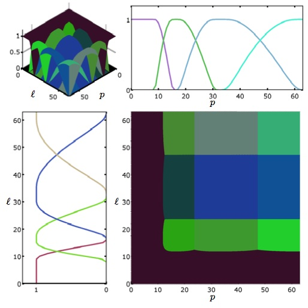
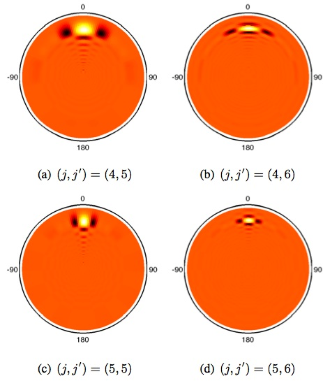

Introduction
The FLAGLET code provides high-performance routines for fast wavelet analysis of signals on the ball using the Flaglet transform described in Leistedt and McEwen (2012). It exploits S2LET, FLAG and SSHT codes. The flaglet transform is theoretically exact, i.e. the original signal can be synthesises from its wavelet coefficients exactly since the wavelet coefficients capture all the information of band-limited signals. The FLAGLET transform was extended to support spin, directional features in Leistedt et al (2015).
This page outlines the main features of FLAGLET, installation details as well as the core functionalities and interfaces. References, version, and license information then follows. FLAGLET requires the FLAG, S2LET, SO3, SSHT and FFTW libraries.
Wavelet transform on the ball
The flaglets are constructed through an exact tilling of the Fourier-Laguerre space, a conjunction of the harmonic multipoles arising from the spherical harmonic transform on the sphere (performed by SSHT) and the spherical Laguerre transform on the radial half-line (performed in FLAG). This 2D harmonic space is tiled into wavelets ("flaglets") following the scale-discretised approach and its implementation in S2LET. The flaglets are localised in both real and frequency spaces, as shown on the image below for a particular set of wavelet parameters (tiling of the Fourier-Laguerre space on the left, some flaglets on the right).
 
With an exact spherical harmonic transform as the one provided in SSHT and the exact spherical Laguerre transform from FLAG, the wavelet transform implemented in FLAGLET is theoretically exact in both pixel and harmonic spaces. In other words one can decompose a band-limited signal in a set of flaglet maps that exactly capture all the information, and reconstruct the initial signal at floating-point precision. Due to the nature of the tiling in Fourier-Laguerre space, the individual flaglets have different band-limits and hence can be reconstructed at different resolutions, i.e. with the minimal number of samples. Due to the exactness of all transforms, these two approaches are equivalent and capture all the information contained in the initial band-limited map.
Installation and documentation
The core functionalities of FLAGLET are written in C and are self-documenting. The C library requires FLAG, S2LET, SSHT and FFTW. Interfaces are provided for all high-level routines in Matlab. Several examples, tests and demos are provided fo the C library and the Matlab interfaces.
Compiling
The instuctions and options to build the main C library are detailed here.
Instuctions to build and use the Matlab interfaces are detailed here.
Source code documentation
FLAGLET ships with source and HTML documentation.
- The C documentation is generated by doxygen and available here.
- The Matlab routines that interface with the C implementation are self
documenting, and documentation can be accessed through the help command in
Matlab). HTML documentation is available here and is built with m2html.
Download
We make the source code of the FLAGLET package available under the license described below, downloadable here:

Referencing
If you use FLAGLET for work that results in publication, please reference this site (http://www.flaglets.org/) and the related academic papers:
B. Leistedt, J. D. McEwen, T. Kitching, H. V. Peiris, 3D weak lensing with spin wavelets on the ball, submitted to PRD.
J. D. McEwen, M. Büttner, B. Leistedt, H. V. Peiris, Y. Wiaux, P. Vandergheynst, Spin scale-discretised wavelets on the sphere, IEEE TSP, 2015 (ArXiv).
J. D. McEwen, M. Büttner, B. Leistedt, H. V. Peiris, Y. Wiaux, A novel sampling theorem on the rotation group, IEEE TSP, 2015 (ArXiv).
B. Leistedt and J. D. McEwen, Exact wavelets on the ball, IEEE Trans. Sig. Proc., 60, 2012 (ArXiv | DOI).
B. Leistedt, J. D. McEwen, P. Vandergheynst and Y. Wiaux, S2LET: A code to perform fast wavelet analysis on the sphere, Astronomy & Astrophysics, submitted, 2012 (ArXiv).
If the MW sampling is used please also cite the following paper:
J. D. McEwen and Y. Wiaux, A novel sampling theorem on the sphere, IEEE Trans. Signal Proc., 59, 5876-5887, 2011 (ArXiv | DOI).
License
FLAGLET package to perform fast wavelet transform on the sphere
Copyright (C) 2012 Boris Leistedt & Jason McEwenThis program is free software; you can redistribute it and/or modify it under the terms of the GNU General Public License as published by the Free Software Foundation; either version 2 of the License, or (at your option) any later version.
This program is distributed in the hope that it will be useful, but WITHOUT ANY WARRANTY; without even the implied warranty of MERCHANTABILITY or FITNESS FOR A PARTICULAR PURPOSE. See the GNU General Public License for more details (LICENSE.txt).
You should have received a copy of the GNU General Public License along with this program; if not, write to the Free Software Foundation, Inc., 51 Franklin Street, Fifth Floor, Boston, MA 02110-1301, USA.
About the authors
FLAGLET was developed by Boris Leistedt and Jason McEwen at University College London (UCL).